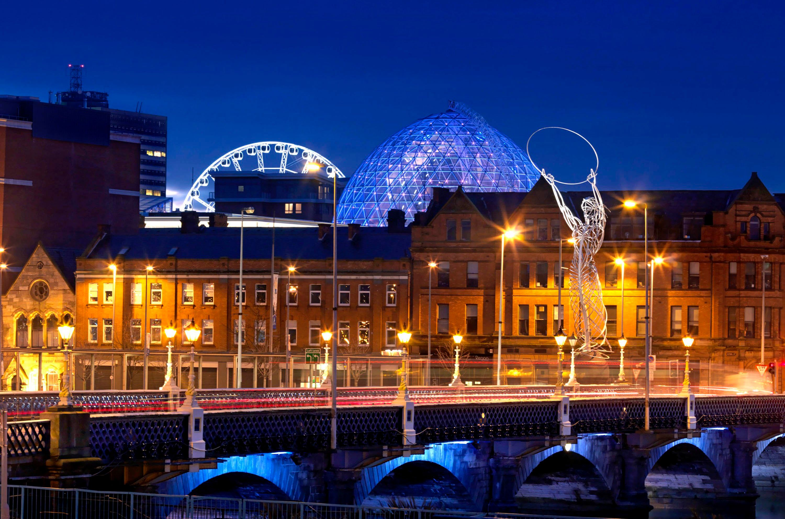
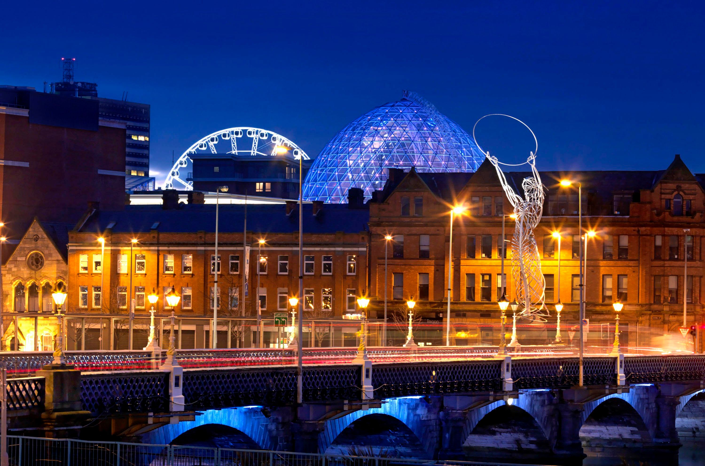

1 star offer
Accomodation: Dream Apartments Belfast
Attractions:
- Titanic Quarter
- Belfast City Hall
- Cathedral Quarter
- Peace Wall
- Causeway Coastal Route
- Giant's Causeway
- Cushendall and Ballintoy
- Carrick-a-Rede Rope Bridge
Day 1:
Upon checking in at Dream Apartment Belfast, you will start your adventure by exploring the historic Titanic Quarter. You will visit The Titanic Belfast, a fascinating museum dedicated to the legendary ship Titanic. Learn about the construction and tragic sinking of this incredible vessel. Afterward, you will take a stroll along the Titanic Quarter waterfront, enjoying beautiful views of the sea.
In the afternoon, we recommend taking a drive to the city center, where you will find a vibrant atmosphere and numerous attractions. Begin by visiting the majestic Belfast City Hall, an iconic symbol of the city. From there, you can explore the nearby Cathedral Quarter, known for its charming cobblestone streets and lively pubs. Don't forget to indulge in some traditional Irish cuisine while you're here!
Day 2:
On the second day, you will delve into Belfast's troubled history by taking a tour of the political murals in West Belfast. These murals depict the city's divided past and provide insight into the conflict known as The Troubles. An experienced guide will lead you through the neighborhoods, explaining the historical significance of each mural and the events they represent.
Afterward, you can visit the Peace Wall, a symbolic barrier that once separated Catholic and Protestant communities. Consider leaving a message of peace and hope on the wall to contribute to the city's ongoing reconciliation efforts.
In the evening, you will have the opportunity to experience Belfast's thriving nightlife. Head to the buzzing Cathedral Quarter, where you will find an array of pubs, bars, and live music venues. Immerse yourself in the lively atmosphere and enjoy some traditional Irish music and dance.
Day 3:
On your final day, you will embark on a scenic journey along the Causeway Coastal Route. This breathtaking coastal drive will take you past stunning landscapes, including the famous Giant's Causeway. Marvel at the hexagonal basalt columns formed by ancient volcanic activity. Take your time to explore the site and learn about the fascinating legends associated with it.
Continuing along the route, you will encounter picturesque villages such as Cushendall and Ballintoy, where you can take in the charm of the Irish countryside. If time permits, you might also want to visit Carrick-a-Rede Rope Bridge, known for its exhilarating views and thrilling crossing experience.
In the evening, return to Belfast and consider enjoying a farewell dinner at one of the city's renowned restaurants. Reflect on your memorable stay in Belfast and savor the flavors of Northern Irish cuisine.
1 Star Offer
£299.99